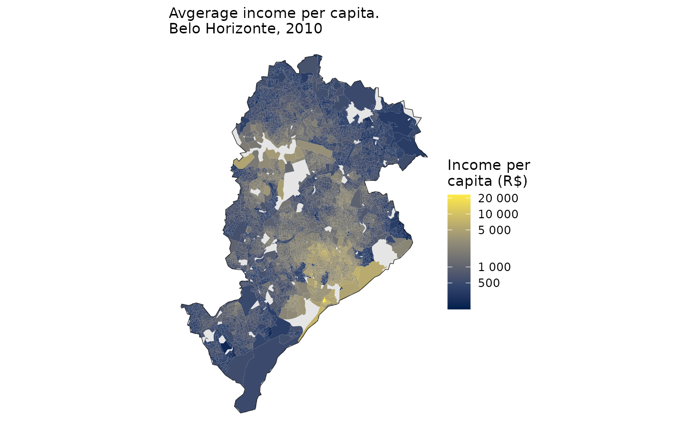

Perhaps the most commonly used datasets from Brazilian censuses are
the microdata of individuals and households. Nonetheless, IBGE also
makes available some extremely data on population and environmental
characteristics aggregated at the census tract level. In this vignette,
we show how to use the {censobr} package to easily
access census tract-level data using the read_tracts()
function.
At the moment, this function includes data from the censuses of 2000, 2010 and 2022.
Data structure
Aggregated data at the census tract level are split into different datasets, and some of them are scattered across several files. For the sake of convenience, we have gathered all of the files into different datasets:
| 2000 | 2010 | 2022 |
|---|---|---|
| Basico | Basico | Basico |
| Domicilio | Domicilio | Domicilio |
| Pessoa | Pessoa | Pessoas |
| Responsavel | Responsavel | |
| Instrucao | Entorno | Entorno |
| Morador | ResponsavelRenda | ResponsavelRenda |
| DomicilioRenda | Indigenas | |
| PessoaRenda | Quilombolas | |
| Obitos | ||
| Preliminares |
All of the data aggregated at census tracts are organized following the same logic.
In the cases when there are multiple files in the same dataset, we
add a reference to the number of the file as a prefix to the variable
name. To illustrate this, let’s have a look at the
"Domicilio" dataset. This dataset is based on three
separate tables: Domicilio01, Domicilio02 and
Domicilio03. So the names of the columns in this dataset are
organized as follows:
library(censobr)
dom <- read_tracts(
year = 2022,
dataset = 'Domicilio',
showProgress = FALSE
)
#> ℹ Downloading data and storing it locally for future use.
names(dom)[c(30:33,119:121, 526:528)]
#> [1] "domicilio01_V00001" "domicilio01_V00002" "domicilio01_V00003"
#> [4] "domicilio01_V00004" "domicilio02_V00090" "domicilio02_V00091"
#> [7] "domicilio02_V00092" "domicilio03_V00497" "domicilio03_V00498"
#> [10] "domicilio03_V00499"Dictionary of variables
To check the meaning of each variable, users can run the
data_dictionary(), which will open the file with the
dictionary of variables in each dataset. The dictionary file is either
an .html, a .pdf or an .xlsx
file, depending on the data set and year.
data_dictionary(
year = 2022,
dataset = 'tracts'
)
#> NULLReproducible examples
Now let’s use a couple reproducible examples to illustrate how to work with census tract-level data. First, we need to load the libraries we’ll be using in this vignette.
In these examples below, example we’ll use the city of Belo Horizonte for demonstration purposes. So we can start by downloading the the geometries of the census tracts in the area. First, we need to download the geometries of all census tracts in the state of Minas Gerais (MG), and then keep only the ones in the municipality of Belo Horizonte. We’ll also download the municipality borders of BH.
muni_bh <- geobr::read_municipality(
code_muni = 'MG',
year = 2010,
showProgress = FALSE
) |>
filter(name_muni == "Belo Horizonte")
#> Using year/date 2010
tracts_sf <- geobr::read_census_tract(
code_tract = "MG",
simplified = FALSE,
year = 2010,
showProgress = FALSE
)
#> Using year/date 2010
tracts_sf <- filter(tracts_sf, name_muni == "Belo Horizonte")
ggplot() +
geom_sf(data=tracts_sf, fill = 'gray90', color='gray60') +
theme_void()Example 1:
In this first example we are going to map the proportion of
households with the presence of trees in their surroundings. To do this,
we need to download the "Entorno" dataset and sum the
variables
domicilios_V05031 + domicilios_V05032 + domicilios_V05033.
# download data
tract_entorno <- censobr::read_tracts(
year = 2022,
dataset = "Entorno",
showProgress = FALSE
)
#> ℹ Downloading data and storing it locally for future use.
# filter observations and calculate indicator
df_trees <- tract_entorno |>
filter(code_tract %in% tracts_sf$code_tract) |>
group_by(code_tract) |>
mutate(total_households = domicilios_V05000,
trees = domicilios_V05031 + domicilios_V05032+ domicilios_V05033,
trees_prop = trees / total_households) |>
select(code_tract, total_households, trees, trees_prop) |>
collect()
head(df_trees)
#> # A tibble: 6 × 4
#> # Groups: code_tract [6]
#> code_tract total_households trees trees_prop
#> <chr> <dbl> <dbl> <dbl>
#> 1 310620005620001 222 222 1
#> 2 310620005620002 158 158 1
#> 3 310620005620004 294 294 1
#> 4 310620005620005 131 131 1
#> 5 310620005620006 142 138 0.972
#> 6 310620005620007 218 218 1Now we can merge the spatial data with our indicator and see how the presence of trees in the surroundings of households varies spatially.
bh_tracts <- left_join(tracts_sf, df_trees, by = 'code_tract')
ggplot() +
geom_sf(data = bh_tracts, aes(fill = trees_prop), color=NA) +
geom_sf(data = muni_bh, color='gray10', fill=NA) +
labs(subtitle = 'Share of households with trees in their surroundings.\nBelo Horizonte, 2010') +
scale_fill_distiller(palette = "Greens", direction = 1,
name='Share of\nhouseholds',
na.value = "gray90",
labels = scales::percent) +
theme_void()
Example 2: Spatial distribution of income
In this second example, we are going to create a map of the spatial distribution of average income per capita. Unfortunately, this information was not collected in the 2022 census at the census tract level, so this example is based on the 2010 data.
In the 2010 census, we can find the information on the the total
number of residents in each census tract in the "Basico"
dataset, variable "V002". Meanwhile, the information on
income can be found in the "DomicilioRenda" dataset,
variable "V003".
Using the code below, we download the data and calculate the income per capita of all census tracts in Brazil.
# download data
tract_basico <- censobr::read_tracts(
year = 2010,
dataset = "Basico",
showProgress = FALSE
)
#> ℹ Downloading data and storing it locally for future use.
tract_income <- censobr::read_tracts(
year = 2010,
dataset = "DomicilioRenda",
showProgress = FALSE
)
#> ℹ Downloading data and storing it locally for future use.
# select columns
tract_basico <- tract_basico |> select('code_tract','V002')
tract_income <- tract_income |> select('code_tract','V003')
# merge
tracts_df <- left_join(tract_basico, tract_income) |> collect()
# calculate income per capita
tracts_df <- tracts_df |> mutate(income_pc = V003 / V002)
head(tracts_df)
#> # A tibble: 6 × 4
#> code_tract V002 V003 income_pc
#> <chr> <dbl> <dbl> <dbl>
#> 1 261020215000008 425 72239 170.
#> 2 261020215000009 387 75249 194.
#> 3 261020215000010 467 63703 136.
#> 4 261020215000011 271 66279 245.
#> 5 261020215000012 121 22880 189.
#> 6 261020215000013 166 27601 166.Finally, we can merge the spatial data with our per capita income estimates and map the results.
bh_tracts <- left_join(tracts_sf, tracts_df, by = 'code_tract')
ggplot() +
geom_sf(data = bh_tracts, aes(fill = income_pc), color=NA) +
geom_sf(data = muni_bh, color='gray10', fill=NA) +
labs(subtitle = 'Avgerage income per capita.\nBelo Horizonte, 2010') +
scale_fill_viridis_c(name = "Income per\ncapita (R$)",
labels = scales::number_format(),
option = 'cividis',
breaks = c(0, 500, 1e3, 5e3, 1e4, 2e4),
trans = "pseudo_log", na.value = "gray90") +
theme_void()